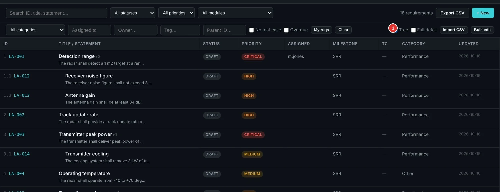
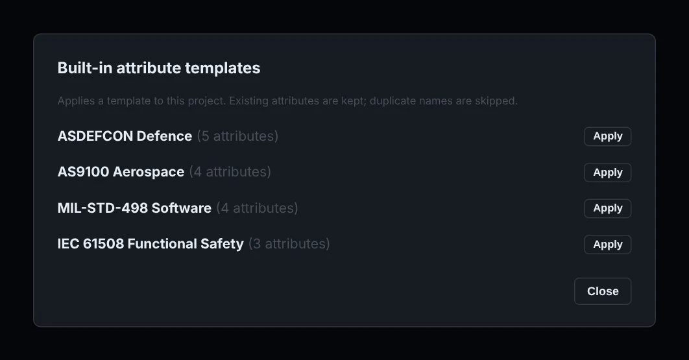
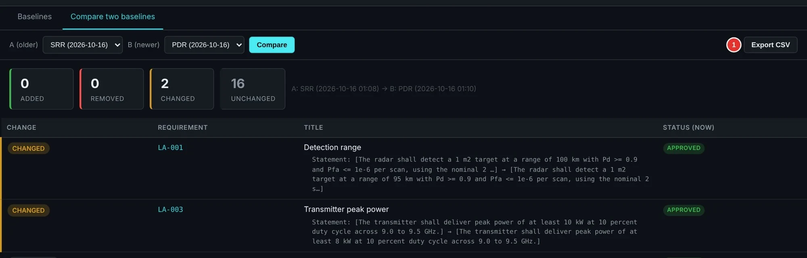
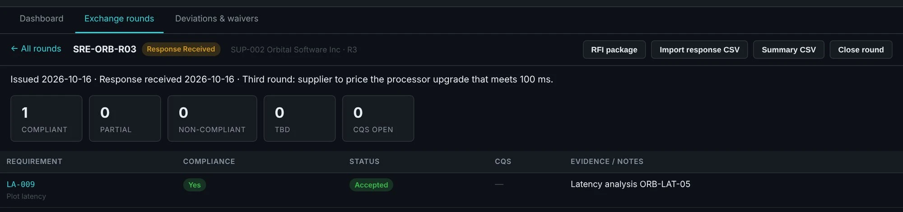
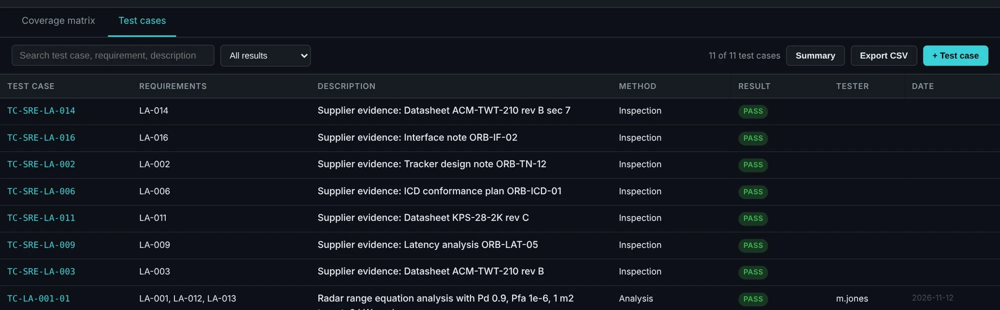
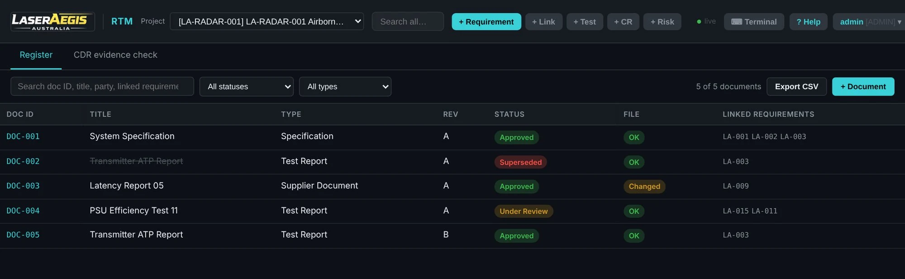
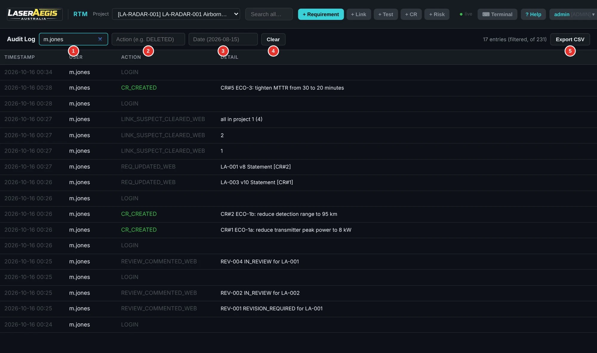
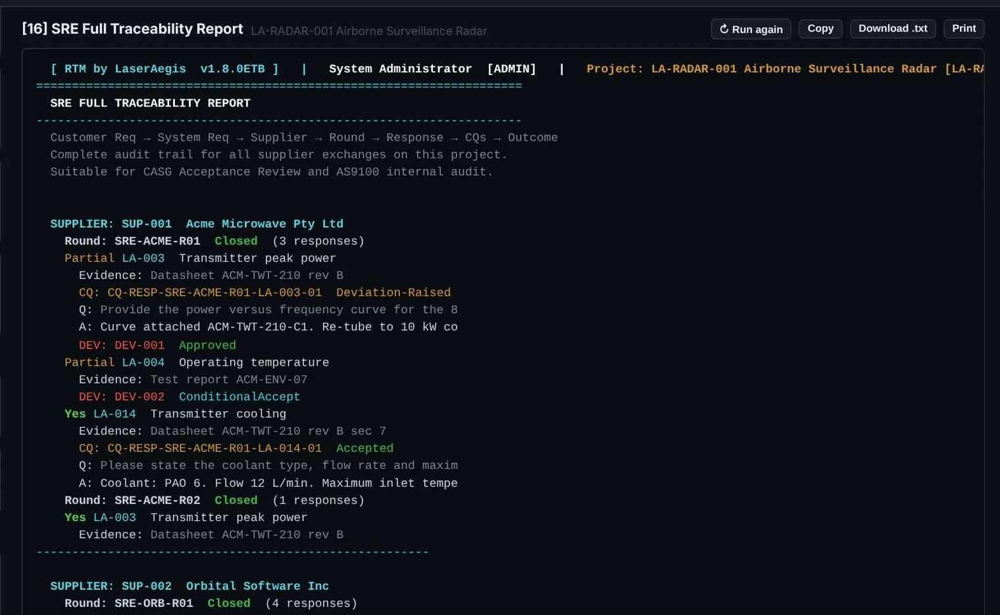

Roles and permissions
Viewer, Analyst, Engineer and Admin roles control what each account can do.
Manage the requirement, the supplier’s position, the approved change and the evidence supporting verification.
Real RTM screens, using a fictional radar project. Selected areas are shown for readability; open any image for the full screen.
01 / Requirements & changes
Capture requirements in a structured hierarchy, link related records and compare what changed between baselines.
Role permissions govern available actions. Administrators have additional authority, and the audit record retains the changes.

Inspect full screen ↗Built-in attribute templates give you a starting structure. Add typed fields — text, integer, enum, boolean or date — and identify attributes required before approval.
Import or export the attribute schema as CSV, and use bulk fill to apply consistent values. A template supplies structure; your contract defines the actual requirements.

Inspect full screen ↗Compare baselines to see changed statements. Approved change requests retain the decision and rationale; affected trace links can be marked suspect for engineering review.

Inspect full screen ↗02 / Supplier Response Exchange
A revised answer can introduce a condition, a clarification or a formal exception. RTM records each round and its outcomes so the accepted position can be followed.
 View full image ↗
View full image ↗Questions and answers stay with the supplier response. Deviation and waiver decisions can retain rationale and conditions.
Suppliers use exchange files to reply; they do not need to run RTM for that reply.
An accepted supplier response records an agreed position. Executed verification and its supporting evidence remain a separate engineering responsibility.

Inspect full screen ↗03 / Verification & evidence
Link requirements to tests and supporting documents. Review what is covered, what remains untested and what needs further evidence.

Inspect full screen ↗RTM records a registered file’s SHA-256 hash and can identify a changed or missing file. The team can flag related trace links for review.
Document revisions can supersede earlier records while preserving their relationship.

View full image ↗Evidence checks flag missing or unapproved supporting documents. Integrity checks identify file changes; they do not certify the document’s contents. Evidence reports support review preparation and do not guarantee customer or contract acceptance.
Governance & audit
A recorded audit history records the user, time, action and detail. Filter by user, action keyword or date, then export the records to CSV for review.
Combine the operation log with role permissions, requirement versions, review outcomes and change requests to follow the engineering decision trail.
The audit trail supports accountability and review. Your project still defines approval responsibilities and acceptance criteria.

Inspect full screen ↗04 / Reports & exchange
Choose from 24 Reports & Exports menu options, covering reporting, checks and file exchange. The Programme Pack brings eight connected project files together: requirements, compliance, verification, risks, suppliers, SOW, supplier requirements and a milestone report.
ReqIF exchange supports the documented mappings. Review the scope below when planning a transfer between tools.
Read the deployment and exchange FAQ →
Inspect full screen ↗| Supported within documented mappings | Not retained as original content |
|---|---|
| Requirements, hierarchy and supported relations | Attachments, images and baselines are not imported |
| Mapped fields; preview identifies unmapped or adjusted values | Rich XHTML becomes plain text |
Viewer, Analyst, Engineer and Admin roles control what each account can do.
Changes are recorded with who made them and when, alongside requirement history and the change request audit log.
Record review decisions and comments against requirements.
Record tender entries and link them to the requirements that respond to them.
Record suppliers, statement-of-work items and supplier requirements alongside your own.
Record risks by likelihood and impact and relate them to requirements.
Track progress against milestones and take baselines for later comparison.
Add project-specific attributes and organise requirements into modules.
Built-in reports, plus CSV, ReqIF, HTML and ZIP pack exchange within the documented scope.
Make the workflow concrete
Choose a supplier reply, a baseline change or a verification record for a focused demonstration.
Prefer to explore first? Follow supplier decisions, controlled changes and evidence checks in the free 10-page radar case, with a review checklist and Excel / CSV references.